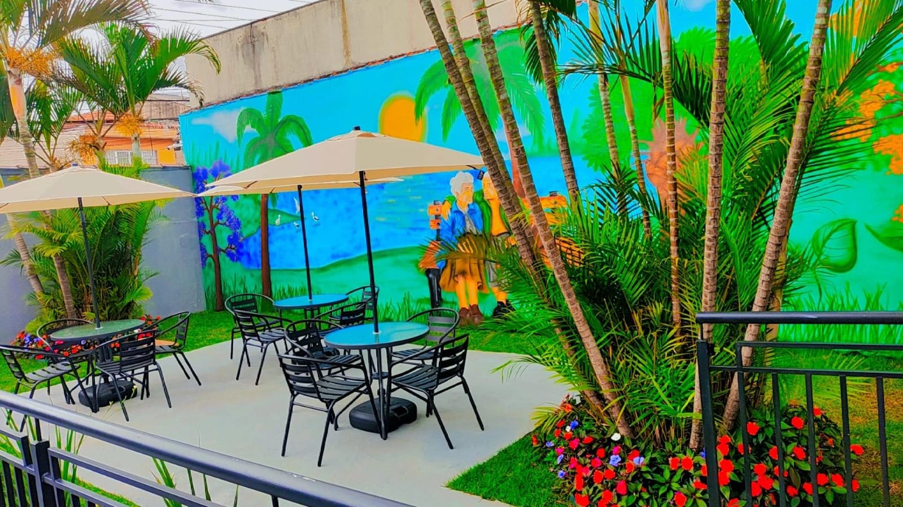
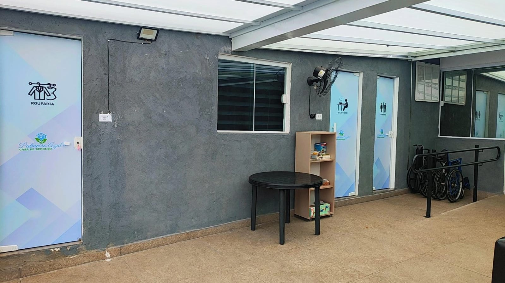
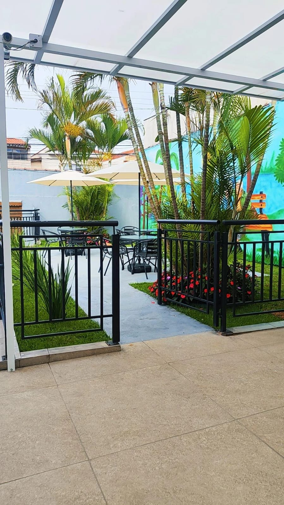
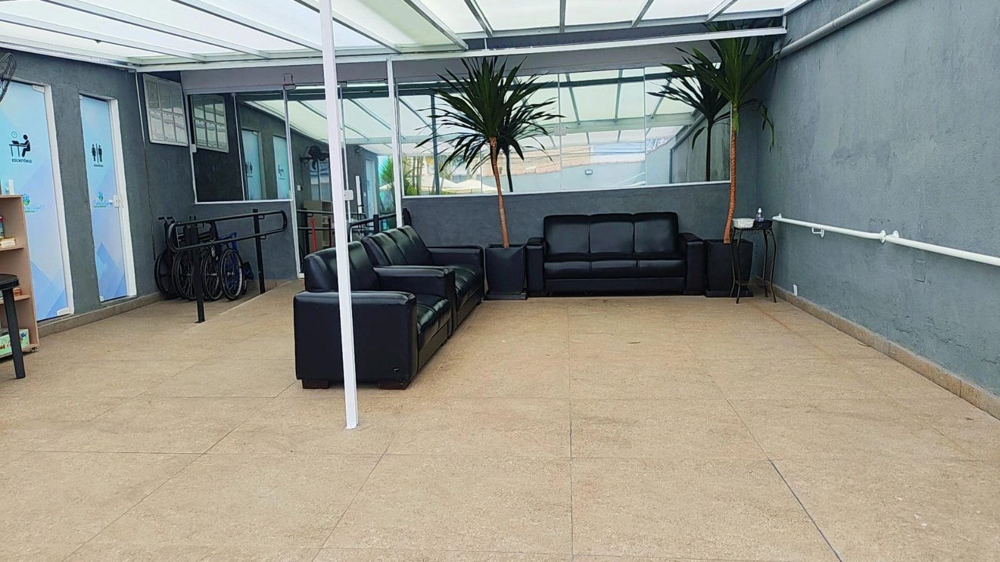
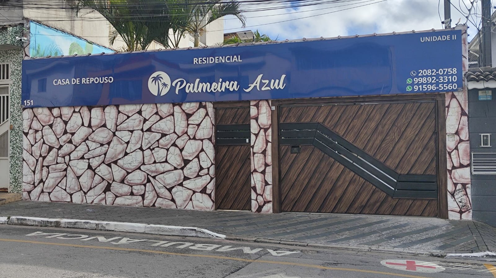

Casa de repouso · Zona Leste de São Paulo
Cuidamos de quem sempre cuidou de você.
Um residencial para a terceira idade na Vila Rui Barbosa: para passar o dia, ficar uma temporada ou morar.
- Funcionamento 24h
- Visitas todos os dias
- 6 refeições diárias

O jeito de cuidar
Nosso objetivo é ajudar os residentes a permanecerem ativos e envolvidos, incentivando a independência na maior parte do tempo.
Se estiver planejando uma curta permanência, ou se for se estabelecer conosco, oferecemos uma variedade de serviços e instalações para enfrentar os desafios e promover a alegria da vida na terceira idade.
Um dia na casa
Amanhece.
O dia começa com calma e com a primeira das seis refeições servidas até a noite. A casa conta com nutricionista.
O dia se movimenta.
Fisioterapia em grupo, musicoterapia, pet terapia e o acompanhamento da psicopedagoga mantêm os residentes ativos e envolvidos.
A família chega.
As visitas acontecem todos os dias da semana. E, nas datas festivas, a comemoração é de todos: idosos e familiares.
Anoitece.
A casa não fecha. O funcionamento é 24 horas, com suporte médico a qualquer momento, caso necessário.



Formas de ficar
Um dia, uma temporada ou a vida toda.
Creche
Para quem passa o dia conosco e volta para casa.
Curta permanência
Para quem está planejando ficar por um período.
Moradia
Para quem vem se estabelecer conosco.
O que está incluso
Cada cuidado, uma folha.
6 refeições diárias
Nutricionista
Fisioterapia em grupo
Psicopedagoga
Atendimento médico
1 vez ao mês, com suporte 24h para os demais dias, caso necessário.
Lavanderia
Pet terapia
Musicoterapia
A vida na casa
Festa, aqui, é com a família junto.
Datas festivas
Comemorações para os idosos e para os familiares.
Visitas
Todos os dias da semana.
No Instagram
Unidades
Unidade II, na Vila Rui Barbosa.
Av. Vinte e Quatro de Fevereiro, 151
Vila Rui Barbosa, São Paulo — SP · 03734-090
Venha conhecer a casa